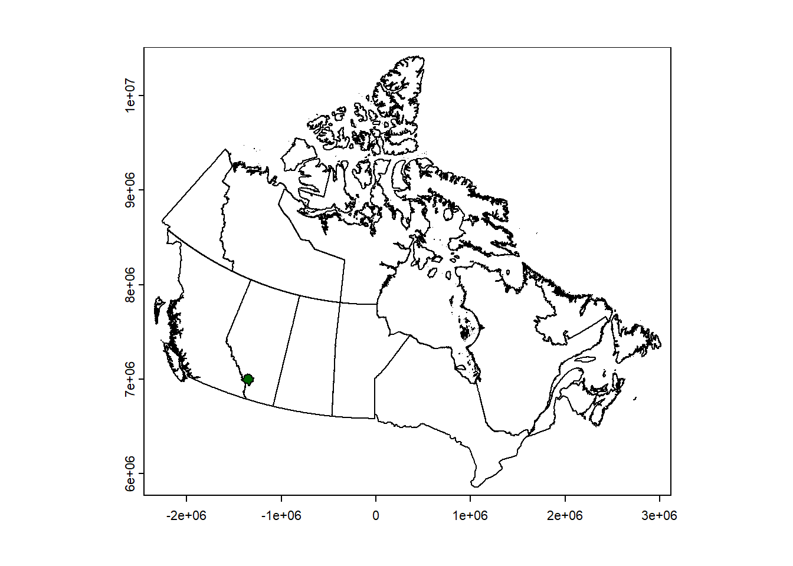

In Chapter 1 of this guide, we described how to create new SpaDES modules, their different components, how to link different modules and how to set up and run a simulation.
Here, we assume that you are familiar with these steps, but go further in showing important SpaDES features that facilitate many of the steps common to most ecological modelling exercises. For the sake of simplicity, we focus our example on projecting a species’ distribution as a function of climate covariates. Yet, the true power of SpaDES is more evident when using complex dynamic simulation models parametrised using large datasets and ran across large spatial areas.
This example is broken into four main parts: Module creation and coding; Running the model; Caching; and Best practices. By no means does it cover caching or best practices in full, as each of these topics is very extensive, but it highlights some of their essentials in SpaDES and from our own experience.
The full R script used to run the example can be found in Appendix B .
2.1 The example: projecting species distribution shifts under climate change
Species distribution models (SDMs) have been widely used in ecology to predict how species presences and absences across a landscape may change under changing environmental conditions. As a result, there are several R packages that have been built with this in mind [e.g. `dismo` @dismo; `biomod2` @biomod2] and many ecologists do these analyses exclusively in R.
Often, these analyses are run only once for a given set of species, baseline and projected environmental conditions, and researchers will have a few R scripts (or maybe just one longer script) that load the data into R, do any necessary pre-processing steps, fit the models and run species distribution projections. The usefulness of SpaDES comes when we want an automated and standardized workflow that can be easily updated with new data and adapted with new algorithms. SpaDES provides a common standard and a modular approach to modelling that facilitates expanding, debugging and sharing code, but also various tools that bring many well-known best practices from computer- and data-science workflows (including reproducible, modular workflows, and caching), to the realm of ecological modelling, so that they can be used by non-computer-scientists with minimal learning. In an SDM project this means that updating data and algorithms, and automating iterative forecasting become easier and less prone to errors. When SpaDES modules are open and shared, this also expands a potential pool of users who can themselves help improve the code.
2.2 Module creation and coding
With the above in mind, in this example we created three modules that source and pre-process data (‘data modules’) and a module that fits an SDM and iteratively forecasts species distributions (we call it a ‘simulation module’, although the simulation only involves predicting from a statistical model). The idea is that we could, for instance, provide different data sources to one of the data modules and only update the parts of the simulation that are affected by this change (i.e. presumably the other data module steps with not be affected). Or, we could develop a second simulation module using a different SDM approach and swap the two modules to inspect which provides better predictions.
Our data modules are speciesAbundanceData and climateData. The simulation module is projectSpeciesDist. We start by creating an .R script to set up and control the simulation. In this example this script is called Part2_SDMs.R.
The script begins with a few lines of code that ensure a few packages are installed and loaded (see Reproducible package installation). It then defines the necessary folder directories for the simulation and creates the modules in the modules/ folder.
Code
options(repos =c("https://predictiveecology.r-universe.dev/", CRAN ="https://cloud.r-project.org"))if(getRversion()<"4.2.1"){warning(paste("dismo::maxent may create a fatal error","when using R version < v4.2.1 and from RStudio.\n", "Please upgrade R, or run this script outside of RStudio.\n","See https://github.com/rspatial/dismo/issues/13"))}## decide where you're workingmainPath<-file.path("~/SpaDES4Dummies_Part2")pkgPath<-file.path(mainPath, "packages", version$platform,paste0(version$major, ".", strsplit(version$minor, "[.]")[[1]][1]))dir.create(pkgPath, recursive =TRUE).libPaths(pkgPath, include.site =FALSE)## install packages in project library (proj-lib)if(!"remotes"%in%installed.packages(lib.loc =pkgPath))install.packages("remotes")if(!"Require"%in%installed.packages(lib.loc =pkgPath)||packageVersion("Require", lib.loc =pkgPath)<"0.3.1.9015"){remotes::install_github("PredictiveEcology/Require@2788b023ad191c29346ef8c64df71b937be307e2", upgrade =FALSE)}## Notes: ## 1) if you are working from RStudio and have an older version of base packages like `Rcpp`, `rlang` ## (and others) installed, you may need to run the following lines (and code above) directly from R## in order to update these base packages## 2) Please ensure the appropriate Rtools version is installed (see)## there seems to be a problem with `ragg` and a forced install solves itif(!"ragg"%in%installed.packages(lib.loc =pkgPath)){install.packages("ragg")}Require::Require(c("PredictiveEcology/SpaDES.project@transition (HEAD)", "PredictiveEcology/SpaDES.core@master (HEAD)",## these will be needed later on:"ggpubr","geodata","SpaDES.tools","PredictiveEcology/SpaDES.experiment@75d917b70b892802fed0bbdb2a5e9f3c6772f0ba"), require =FALSE, ## don't load packages yet upgrade =FALSE, standAlone =TRUE)Require::Require("SpaDES.core", install =FALSE)## load onlysetPaths(cachePath =file.path(mainPath, "cache"), inputPath =file.path(mainPath, "inputs"), modulePath =file.path(mainPath, "modules"), outputPath =file.path(mainPath, "outputs"))simPaths<-getPaths()## check that this is what you wanted## Let's create a self-contained module that will simulate the species' abundance for any given period of time and frequency.if(!dir.exists(file.path(simPaths$modulePath, "speciesAbundanceData"))){newModule(name ="speciesAbundanceData", path =simPaths$modulePath)}if(!dir.exists(file.path(simPaths$modulePath, "climateData"))){newModule(name ="climateData", path =simPaths$modulePath)}if(!dir.exists(file.path(simPaths$modulePath, "projectSpeciesDist"))){newModule(name ="projectSpeciesDist", path =simPaths$modulePath)}
Notice how we protect the newModule call with an if statement that first detects whether the module directory exists already. This is necessary to prevent overwriting existing modules should this script be run a second time in the same location (see Protect yourself and others from common mistakes/problems).
setPaths will create the project folder directories in case they do not exist (no overwriting occurs in case they do).
Finally, note that we do not load any R packages yet, as we will later use Require to make sure all module dependencies are installed before running the simulation (see Reproducible package installation). Because Require may attempt to install missing packages and because installing packages should be done in a clean R session, we will only load any packages after all the installation steps are complete.
2.2.1 Data modules
The next two sections show our two data modules .R scripts. We assume you are already familiar with the different parts of a module .R script; if not, see Chapter 1. We do not discuss the module .Rmd files, which should document each module in detail (see [Module documentation – module .Rmd]).
2.2.1.1speciesAbundanceData module:
This module downloads freely available spatial layers of Picea glauca percent cover (% cover) across Canada and pre-processes them to match a user-supplied study area raster. We use the new terra package throughout this example, since the raster package will soon be discontinued.
The prepInputs function downloads the % cover layer from the Canadian National Forest Inventory data server using the URL supplied by sppAbundURL and processes it to match the study area raster (studyAreaRas) supplied by the user. The module then outputs Picea glauca % cover as a raster (sppAbundanceRas) and as a data.table (sppAbundanceDT). The data.table contains added information about the year of the simulation during which the data should be used (here, only the first year when SDM fitting happens).
We export species % cover in two formats (a raster and a table) for demonstrational purposes, but also because we could envision that this model (i.e. group of modules) could save the species distribution projections for several points in time in a more compact format of a data.table – large raster layers can consume a considerable amount of disk space (see Coding for the future).
Code
## Everything in this file and any files in the R directory are sourced during `simInit()`;## all functions and objects are put into the `simList`.## To use objects, use `sim$xxx` (they are globally available to all modules).## Functions can be used inside any function that was sourced in this module;## they are namespaced to the module, just like functions in R packages.## If exact location is required, functions will be: `sim$.mods$<moduleName>$FunctionName`.defineModule(sim, list( name ="speciesAbundanceData", description =paste("Data module to prepare tree species cover data for species distribution modelling.", "Defaults to using Canadian National Forest Inventory data."), keywords =c("minimal SpaDES example", "species distribution model"), authors =structure(list(list(given =c("Ceres"), family ="Barros", role =c("aut", "cre"), email ="ceres.barros@ubc.ca", comment =NULL)), class ="person"), childModules =character(0), version =list(speciesAbundanceData ="1.0.0"), timeframe =as.POSIXlt(c(NA, NA)), timeunit ="year", citation =list("citation.bib"), documentation =list("README.md", "speciesAbundanceData.Rmd"), ## same file reqdPkgs =list("SpaDES.core (>=2.0.2)","httr", "terra", "ggplot2", "rasterVis"), parameters =bindrows(#defineParameter("paramName", "paramClass", value, min, max, "parameter description"),defineParameter("sppAbundURL", "character", paste0("https://ftp.maps.canada.ca/pub/nrcan_rncan/Forests_Foret/","canada-forests-attributes_attributs-forests-canada/","2001-attributes_attributs-2001/","NFI_MODIS250m_2001_kNN_Species_Pice_Gla_v1.tif"), NA, NA,paste("URL where the first SpatRaster of species abundance resides.","This will be the abundance data used to fit the species ditribution model.","Defaults to *Picea glauca* percent cover across Canada, in 2001", "(from Canadian National Forest Inventory forest attributes)")),defineParameter(".plots", "character", "screen", NA, NA,"Used by Plots function, which can be optionally used here"),defineParameter(".plotInitialTime", "numeric", start(sim), NA, NA,"Describes the simulation time at which the first plot event should occur."),defineParameter(".plotInterval", "numeric", NA, NA, NA,"Describes the simulation time interval between plot events."),defineParameter(".saveInitialTime", "numeric", NA, NA, NA,"Describes the simulation time at which the first save event should occur."),defineParameter(".saveInterval", "numeric", NA, NA, NA,"This describes the simulation time interval between save events."),defineParameter(".studyAreaName", "character", NA, NA, NA,"Human-readable name for the study area used. If NA, a hash of studyArea will be used."),## .seed is optional: `list('init' = 123)` will `set.seed(123)` for the `init` event only.defineParameter(".seed", "list", list(), NA, NA,"Named list of seeds to use for each event (names)."),defineParameter(".useCache", "logical", FALSE, NA, NA,"Should caching of events or module be used?")), inputObjects =bindrows(#expectsInput("objectName", "objectClass", "input object description", sourceURL, ...),expectsInput("studyAreaRas", objectClass ="SpatRaster", desc ="A binary raster of the study area")), outputObjects =bindrows(#createsOutput("objectName", "objectClass", "output object description", ...),createsOutput("sppAbundanceDT", "data.table", desc =paste("Species abundance data from `sppAbundanceRas`, with columns 'cell',","'x', 'y', 'sppAbund' and 'year' (an integer matching the number in","names(`sppAbundanceRas`).")),createsOutput("sppAbundanceRas", "SpatRaster", desc =paste("A species abundance layer used to fit a species distribution model","at the start of the simulation. Layers named as:","paste('year', start(sim):end(sim), sep = '_')). Data obtained from","P(sim)$sppAbundURL")))))## event types# - type `init` is required for initializationdoEvent.speciesAbundanceData=function(sim, eventTime, eventType, debug=FALSE){switch(eventType, init ={## do stuff for this eventsim<-abundanceInit(sim)## schedule future event(s)sim<-scheduleEvent(sim, eventTime =P(sim)$.plotInitialTime, moduleName ="speciesAbundanceData", eventType ="abundPlot", eventPriority =.normal())}, abundPlot ={## do stuff for this eventsim<-abundancePlot(sim)},warning(paste("Undefined event type: '", current(sim)[1, "eventType", with =FALSE],"' in module '", current(sim)[1, "moduleName", with =FALSE], "'", sep ="")))return(invisible(sim))}## event functions# - keep event functions short and clean, modularize by calling subroutines from section below.## Initialisation Event functionabundanceInit<-function(sim){## download data - prepInputs does all the heavy-lifting of dowloading and pre-processing the layer and caches.## there seems to be an issue masking this particular raster with `terra` and `GDAL`, so we'll not use them here.opts<-options("reproducible.useTerra"=FALSE,"reproducible.useGDAL"=FALSE)on.exit(options(opts), add =TRUE)httr::with_config(config =httr::config(ssl_verifypeer =0L), {sppAbundanceRas<-prepInputs(targetFile ="NFI_MODIS250m_2001_kNN_Species_Pice_Gla_v1.tif", url =P(sim)$sppAbundURL,# fun = "terra::rast",# projectTo = sim$studyAreaRas,# cropTo = sim$studyAreaRas,# maskTo = sim$studyAreaRas, rasterToMatch =raster::raster(sim$studyAreaRas), maskWithRTM =TRUE, overwrite =TRUE, cacheRepo =cachePath(sim))})options(opts)if(is(sppAbundanceRas, "RasterLayer")){sppAbundanceRas<-terra::rast(sppAbundanceRas)}names(sppAbundanceRas)<-paste("year", time(sim), sep ="_")sppAbundanceDT<-as.data.table(as.data.frame(sppAbundanceRas, xy =TRUE, cells =TRUE))sppAbundanceDT[, year:=as.integer(sub("year_", "", names(sppAbundanceRas)))]setnames(sppAbundanceDT, "year_1", "sppAbund")## export to simsim$sppAbundanceRas<-sppAbundanceRassim$sppAbundanceDT<-sppAbundanceDTreturn(invisible(sim))}## Plotting event function abundancePlot<-function(sim){## plot species abundancePlots(sim$sppAbundanceRas, fn =plotSpatRaster, types =P(sim)$.plots, usePlot =TRUE, filename =file.path(outputPath(sim), "figures", "speciesAbundance"), plotTitle ="Species abundance data", xlab ="Longitude", ylab ="Latitude")return(invisible(sim))}.inputObjects<-function(sim){#cacheTags <- c(currentModule(sim), "function:.inputObjects") ## uncomment this if Cache is being useddPath<-asPath(getOption("reproducible.destinationPath", dataPath(sim)), 1)message(currentModule(sim), ": using dataPath '", dPath, "'.")# ! ----- EDIT BELOW ----- ! #if(!suppliedElsewhere(sim$studyAreaRas)){## code check: did the user supply a study area?stop("Please supply a 'studyAreaRas' SpatRaster")}# ! ----- STOP EDITING ----- ! #return(invisible(sim))}
2.2.1.2climateData module:
This module downloads and processes freely available spatial layers of four bioclimatic variables used to fit the SDM of Picea glauca in the study area.
The module uses a different way to download data. It relies on two input data.tables that contain the URLs for each climate covariate, one for baseline conditions, the other for projected climate conditions, both containing information about when each layer should be used during the simulation (the “year”column).
We have only supplied one set of data sources for default baseline climate conditions (baselineClimateURLs) and for climate projections (projClimateURLs), all of which are downloaded from WorldClim at 2.5 minutes resolution. The baseline climate data correspond to the 1970-2000 period @FickHijmans2017, which aligns well with the species % cover data year (2001). The climate projections were obtained for 2021-2040, 2041-2060, 2061-2080 and 2081-2100, from CMIP6 downscaled future projections using the CanESM5 model [@SwartEtAl2019] under the SSP 585 climate scenario.
We encourage providing different (or additional) URLs referring to projections for other climate periods, other climate models and other climate scenarios (see WorldClim for a list of climate projections).
If providing other URLs to obtain different climate data, pay special attention to the “year” column of projClimateURLs – the URLs need to correspond to the simulation year during which they will be used (not necessarily the actual climate year, unless the simulation years follow the same numbering).
Like in the speciesAbundanceData module, the prepInputs function processes the climate layers to match the study area raster (studyAreaRas) and compiles all climate data in the climateDT object and as raster layer objects (baselineClimateRas and projClimateRas) – the module’s outputs.
Code
## Everything in this file and any files in the R directory are sourced during `simInit()`;## all functions and objects are put into the `simList`.## To use objects, use `sim$xxx` (they are globally available to all modules).## Functions can be used inside any function that was sourced in this module;## they are namespaced to the module, just like functions in R packages.## If exact location is required, functions will be: `sim$.mods$<moduleName>$FunctionName`.defineModule(sim, list( name ="climateData", description =paste("Data module to prepare climate data for species distribution modelling.", "Defaults to using bioclimatic variables from Worldclim."), keywords =c("minimal SpaDES example", "species distribution model"), authors =structure(list(list(given =c("Ceres"), family ="Barros", role =c("aut", "cre"), email ="ceres.barros@ubc.ca", comment =NULL)), class ="person"), childModules =character(0), version =list(climateData ="1.0.0"), timeframe =as.POSIXlt(c(NA, NA)), timeunit ="year", citation =list("citation.bib"), documentation =list("README.md", "climateData.Rmd"), ## same file reqdPkgs =list("SpaDES.core (>=2.0.2)","ggplot2", "rasterVis", "terra", "data.table"), parameters =bindrows(#defineParameter("paramName", "paramClass", value, min, max, "parameter description"),defineParameter(".plots", "character", "screen", NA, NA,"Used by Plots function, which can be optionally used here"),defineParameter(".plotInitialTime", "numeric", start(sim), NA, NA,"Describes the simulation time at which the first plot event should occur."),defineParameter(".plotInterval", "numeric", NA, NA, NA,"Describes the simulation time interval between plot events."),defineParameter(".saveInitialTime", "numeric", NA, NA, NA,"Describes the simulation time at which the first save event should occur."),defineParameter(".saveInterval", "numeric", NA, NA, NA,"This describes the simulation time interval between save events."),defineParameter(".studyAreaName", "character", NA, NA, NA,"Human-readable name for the study area used. If NA, a hash of studyArea will be used."),## .seed is optional: `list('init' = 123)` will `set.seed(123)` for the `init` event only.defineParameter(".seed", "list", list(), NA, NA,"Named list of seeds to use for each event (names)."),defineParameter(".useCache", "logical", FALSE, NA, NA,"Should caching of events or module be used?")), inputObjects =bindrows(#expectsInput("objectName", "objectClass", "input object description", sourceURL, ...),expectsInput("baselineClimateURLs", "data.table", desc =paste("A table with columns 'vars', 'URL', 'targetFile' and 'year', containing","variable names, URLs and raster file names of each climate covariate","used in the species distribution models. Year is the first year of the", "simulation (not the reference climate period). Defaults to Worldclim's","'bio1', 'bio4', 'bio12' and 'bio15' bioclimatic variables for the 1970-2000","climate period, at 2.5 minutes.")),expectsInput("projClimateURLs", "data.table", desc =paste("Same as `baselineClimateURLs` but refering to projected climate layers.","Variable names in 'vars' need to the same as in `baselineClimateURLs`","and P(sim)$projClimateURLs. Years should correspond to simulation years.","Defaults to 2081-2100 projections using the CanESM5 climate model and the","SSP 585 climate scenario, at 2.5 minutes, obtained from Worldclim.")),expectsInput("studyAreaRas", objectClass ="SpatRaster", desc ="A binary raster of the study area")), outputObjects =bindrows(#createsOutput("objectName", "objectClass", "output object description", ...),createsOutput("climateDT", "data.table", desc =paste("A data.table with as many columns as the climate covariates", "used in the species distribution model and 'year' column describing","the simulation year to which the data corresponds.")),createsOutput("baselineClimateRas", "SpatRaster", desc =paste("Baseline climate layers obtained from `baselineClimateURLs`")),createsOutput("projClimateRas", "SpatRaster", desc =paste("Baseline climate layers obtained from `projClimateURLs`")))))## event types# - type `init` is required for initializationdoEvent.climateData=function(sim, eventTime, eventType, debug=FALSE){switch(eventType, init ={## do stuff for this eventsim<-climateInit(sim)## schedule future event(s)sim<-scheduleEvent(sim, eventTime =P(sim)$.plotInitialTime, moduleName ="climateData", eventType ="climPlot", eventPriority =.normal())}, climPlot ={## do stuff for this eventsim<-climatePlot(sim)},warning(paste("Undefined event type: '", current(sim)[1, "eventType", with =FALSE],"' in module '", current(sim)[1, "moduleName", with =FALSE], "'", sep ="")))return(invisible(sim))}## event functions# - keep event functions short and clean, modularize by calling subroutines from section below.## Initialisation Event functionclimateInit<-function(sim){## GET BASELINE DATA## make a vector of archive (zip) file names if the url points to one.archiveFiles<-sapply(sim$baselineClimateURLs$URL, function(URL){if(grepl("\\.zip$", basename(URL))){basename(URL)}else{NULL}}, USE.NAMES =FALSE)## check that baseline climate data only has one year valueif(length(unique(sim$baselineClimateURLs$year))!=1){stop(paste("'baselineClimateURLs' should all have the same 'year' value,","corresponding to the first year of the simulation"))}## download data - prepInputs does all the heavy-lifting of dowloading and pre-processing the layer and caches.baselineClimateRas<-Cache(Map, f =prepInputs, url =sim$baselineClimateURLs$URL, targetFile =sim$baselineClimateURLs$targetFile, archive =archiveFiles, MoreArgs =list( fun ="terra::rast", overwrite =TRUE, projectTo =sim$studyAreaRas, cropTo =sim$studyAreaRas, maskTo =sim$studyAreaRas, rasterToMatch =sim$studyAreaRas, cacheRepo =cachePath(sim)), cacheRepo =cachePath(sim))names(baselineClimateRas)<-paste0(sim$baselineClimateURLs$vars, "_year", sim$baselineClimateURLs$year)## make a stackbaselineClimateRas<-rast(baselineClimateRas)## make a data.table baselineClimateData<-as.data.table(as.data.frame(baselineClimateRas, xy =TRUE, cells =TRUE))setnames(baselineClimateData, sub("_year.*", "", names(baselineClimateData)))## don't need year in names here baselineClimateData[, year:=unique(sim$baselineClimateURLs$year)]## GET PROJECTED DATA## make a vector of archive (zip) file names if the url points to one.archiveFiles<-lapply(sim$projClimateURLs$URL, function(URL){if(grepl("\\.zip$", basename(URL))){basename(URL)}else{NULL}})## download data - prepInputs does all the heavy-lifting of dowloading and pre-processing the layer and caches.## workaround Mar 30th 2022 cache issue with terra.projClimateRas<-Cache(Map, f =prepInputs, url =sim$projClimateURLs$URL, targetFile =sim$projClimateURLs$targetFile, archive =archiveFiles, MoreArgs =list( overwrite =TRUE, fun ="raster::stack", projectTo =sim$studyAreaRas, cropTo =sim$studyAreaRas, maskTo =sim$studyAreaRas, rasterToMatch =sim$studyAreaRas, cacheRepo =cachePath(sim)), cacheRepo =cachePath(sim))if(any(sapply(projClimateRas, function(x)is(x, "RasterLayer")|is(x, "RasterStack")))){projClimateRas<-lapply(projClimateRas, terra::rast)}## these rasters are different. The tif file contains all the variables in different layers## so, for each variable, we need to keep only the layer of interestprojClimateRas<-mapply(function(stk, var){lyr<-which(sub(".*_", "BIO", names(projClimateRas[[1]]))==var)return(stk[[lyr]])}, stk =projClimateRas, var =sim$projClimateURLs$vars)names(projClimateRas)<-paste0(sim$projClimateURLs$vars, "_year", sim$projClimateURLs$year)## make a stackprojClimateRas<-rast(projClimateRas)## make a data.table projClimateData<-as.data.table(as.data.frame(projClimateRas, xy =TRUE, cells =TRUE))## melt so that year is in a columnprojClimateDataMolten<-lapply(unique(sim$projClimateURLs$vars), function(var, projClimateData){cols<-grep(paste0(var, "_year"), names(projClimateData), value =TRUE)idCols<-names(projClimateData)[!grepl("_year", names(projClimateData))]moltenDT<-melt(projClimateData, id.vars =idCols, measure.vars =cols, variable.name ="year", value.name =var)moltenDT[, year:=sub(paste0(var, "_year"), "", year)]moltenDT[, year:=as.integer(year)]return(moltenDT)}, projClimateData =projClimateData)idCols<-c(names(projClimateData)[!grepl("_year", names(projClimateData))], "year")## set keys for mergeprojClimateDataMolten<-lapply(projClimateDataMolten, function(DT, cols){setkeyv(DT, cols =cols)return(DT)}, cols =idCols)projClimateData<-Reduce(merge, projClimateDataMolten)## bind the two data.tablesif(!identical(sort(names(baselineClimateData)), sort(names(projClimateData)))){stop("Variable names in `projClimateURLs` differ from those in `baselineClimateURLs`")}## checkif(!compareGeom(baselineClimateRas, projClimateRas, res =TRUE, stopOnError =FALSE)){stop("`baselineClimateRas` and `projClimateRas` do not have the same raster properties")}## export to simsim$baselineClimateRas<-baselineClimateRassim$projClimateRas<-projClimateRassim$climateDT<-rbindlist(list(baselineClimateData, projClimateData), use.names =TRUE)return(invisible(sim))}## Plotting event function climatePlot<-function(sim){## plot climate rasters allRasters<-rast(list(sim$baselineClimateRas, sim$projClimateRas))lapply(sim$baselineClimateURLs$vars, function(var, allRasters){lrs<-grep(paste0(var, "_"), names(allRasters))file_name<-paste0("climateRas_", var)Plots(allRasters[[lrs]], fn =plotSpatRasterStk, types =P(sim)$.plots, usePlot =FALSE, filename =file.path(outputPath(sim), "figures", file_name), xlab ="Longitude", ylab ="Latitude")}, allRasters =allRasters)return(invisible(sim))}.inputObjects<-function(sim){#cacheTags <- c(currentModule(sim), "function:.inputObjects") ## uncomment this if Cache is being useddPath<-asPath(getOption("reproducible.destinationPath", dataPath(sim)), 1)message(currentModule(sim), ": using dataPath '", dPath, "'.")# ! ----- EDIT BELOW ----- ! #if(!suppliedElsewhere(sim$studyAreaRas)){## code check: did the user supply a study area?stop("Please supply a 'studyAreaRas' SpatRaster")}if(!is(sim$studyAreaRas, "SpatRaster")){sim$studyAreaRas<-rast(sim$studyAreaRas)}if(!suppliedElsewhere(sim$baselineClimateURLs)){sim$baselineClimateURLs<-data.table( vars =c("BIO1", "BIO4", "BIO12", "BIO15"), URL =c("https://biogeo.ucdavis.edu/data/worldclim/v2.1/base/wc2.1_2.5m_bio.zip","https://biogeo.ucdavis.edu/data/worldclim/v2.1/base/wc2.1_2.5m_bio.zip","https://biogeo.ucdavis.edu/data/worldclim/v2.1/base/wc2.1_2.5m_bio.zip","https://biogeo.ucdavis.edu/data/worldclim/v2.1/base/wc2.1_2.5m_bio.zip"), targetFile =c("wc2.1_2.5m_bio_1.tif", "wc2.1_2.5m_bio_4.tif", "wc2.1_2.5m_bio_12.tif", "wc2.1_2.5m_bio_15.tif"), year =rep(1L, 4))}if(!suppliedElsewhere(sim$projClimateURLs)){sim$projClimateURLs<-data.table( vars =rep(c("BIO1", "BIO4", "BIO12", "BIO15"), times =4), URL =rep(c("https://geodata.ucdavis.edu/cmip6/2.5m/CanESM5/ssp585/wc2.1_2.5m_bioc_CanESM5_ssp585_2021-2040.tif","https://geodata.ucdavis.edu/cmip6/2.5m/CanESM5/ssp585/wc2.1_2.5m_bioc_CanESM5_ssp585_2041-2060.tif","https://geodata.ucdavis.edu/cmip6/2.5m/CanESM5/ssp585/wc2.1_2.5m_bioc_CanESM5_ssp585_2061-2080.tif","https://geodata.ucdavis.edu/cmip6/2.5m/CanESM5/ssp585/wc2.1_2.5m_bioc_CanESM5_ssp585_2081-2100.tif"), each =4), targetFile =rep(c("wc2.1_2.5m_bioc_CanESM5_ssp585_2021-2040.tif","wc2.1_2.5m_bioc_CanESM5_ssp585_2041-2060.tif","wc2.1_2.5m_bioc_CanESM5_ssp585_2061-2080.tif","wc2.1_2.5m_bioc_CanESM5_ssp585_2081-2100.tif"), each =4), year =rep(2L:5L, each =4))}# ! ----- STOP EDITING ----- ! #return(invisible(sim))}
We draw your attention to a few particular aspects of the data modules:
How we took care to define the data classes of parameters, expected inputs and module outputs in their respective metadata sections;
How we added additional R packages necessary to run the module to the metadata;
How we added default values for parameters and inputs explicitly used by the modules (others like .plotInterval were left as NA). The exception was the studyAreaRas input object for which we do not provide a default. However, we added a code check in .inputObject that stops interrupts R if this object is not in sim (see Protect yourself and others from common mistakes/problems)
How we use the function prepInputs to do most of the heavy-lifting of downloading data and spatial pre-processing. This function is able to recognize whether the data has already been downloaded, and can cache all spatial processing tasks (see Caching). In some cases, we wrapped prepInputs in a Map call to loop through several URLs and download and pre-process many data layers. This Map call can also be cached with Cache.
How we use the function Plots to control plotting to the screen device and/or save to image files depending on the P(sim)$.plots argument. Note that Plots works best with functions that output ggplot objects, or that are compatible with quickPlot::Plot.
The fact that neither module depends on the other. This is not a required feature of data modules, but just so happens to be the case in this example. In fact, in more complex modelling frameworks, like the LandR model [@BarrosEtAlinreview], we often have several data modules that depend on each other (e.g., LandR Biomass_speciesData sources and processes tree species percent cover data that is used by LandR Biomass_borealDataPrep to estimate several parameters for the forest landscape simulation model LandR Biomass_core).
How we export objects created within the module functions to sim. Without doing so, these objects are lost after the function is executed.
2.2.2 Prediction module
We show below the .R script for the projectSpeciesDist module. This module depends entirely on the other two, as we did not provide any default input objects in the .inputObjects function. This is, of course, not good practice, but again we warn the user early on (in the .inputObjects function) if the module cannot find the necessary inputs.
This module fits a machine learning SDM using the MaxEnt algorithm implemented in the dismo package. We recommend having a look at this guide to learn about fitting SDMs with dismo and more. Before fitting the SDM, the module converts any non-binary species data into presences and absences.
The main outputs are species distribution projections in the form of plots and a stacked raster layer (sppDistProj) and the fitted SDM object.
Code
## Everything in this file and any files in the R directory are sourced during `simInit()`;## all functions and objects are put into the `simList`.## To use objects, use `sim$xxx` (they are globally available to all modules).## Functions can be used inside any function that was sourced in this module;## they are namespaced to the module, just like functions in R packages.## If exact location is required, functions will be: `sim$.mods$<moduleName>$FunctionName`.defineModule(sim, list( name ="projectSpeciesDist", description ="", keywords ="", authors =structure(list(list(given =c("Ceres"), family ="Barros", role =c("aut", "cre"), email ="ceres.barros@ubc.ca", comment =NULL)), class ="person"), childModules =character(0), version =list(projectSpeciesDist ="1.0.0"), timeframe =as.POSIXlt(c(NA, NA)), timeunit ="year", citation =list("citation.bib"), documentation =list("README.md", "projectSpeciesDist.Rmd"), ## same file reqdPkgs =list("SpaDES.core (>=2.0.2)","caret", "data.table", "dismo","ggplot2", "rJava", "rasterVis"), parameters =bindrows(#defineParameter("paramName", "paramClass", value, min, max, "parameter description"),defineParameter("predVars", "character", c("BIO1", "BIO4", "BIO12", "BIO15"), NA, NA,"Predictors used in statistical model."),defineParameter("presThresh", "numeric", 10, 0, NA,paste("Minimum threshold for the species to be considered present, when"," `sppAbundanceDT` contains non binary species data (e.g. %, proportions,","or abundance data). By default 10% cover.")),defineParameter("statModel", "character", "MaxEnt", NA, NA,paste("What statitical algorith to use. Currently only 'MaxEnt' and 'GLM' are","supported. 'MaxEnt will fit a MaxEnt model using dismo::maxent; 'GLM'","will fit a generalised linear model with a logit link using","glm(..., family = 'binomial'). In both cases all predictor variables are used,","and for GLM only additive effects are considered.")),defineParameter(".plots", "character", "screen", NA, NA,"Used by Plots function, which can be optionally used here"),defineParameter(".plotInitialTime", "numeric", start(sim), NA, NA,"Describes the simulation time at which the first plot event should occur."),## .seed is optional: `list('init' = 123)` will `set.seed(123)` for the `init` event only.defineParameter(".seed", "list", list(), NA, NA,"Named list of seeds to use for each event (names)."),defineParameter(".useCache", "logical", FALSE, NA, NA,"Should caching of events or module be used?")), inputObjects =bindrows(#expectsInput("objectName", "objectClass", "input object description", sourceURL, ...),expectsInput("climateDT", "data.table", desc =paste("A data.table with as many columns as the climate covariates","used in the species distribution model and 'year' column describing","the simulation year to which the data corresponds.")),expectsInput("sppAbundanceDT", "data.table", desc =paste("A species abundance data. Converted to presence/absence data, if not binary.","By default a table with % species cover.")),expectsInput("studyAreaRas", objectClass ="SpatRaster", desc ="A binary raster of the study area")), outputObjects =bindrows(#createsOutput("objectName", "objectClass", "output object description", ...),createsOutput(objectName ="sppDistProj", objectClass ="SpatRaster", desc =paste("Species distribution projections - raw predictions.","Each layer corresponds to a prediciton year")),createsOutput(objectName ="evalOut", objectClass ="ModelEvaluation", desc =paste("`sdmOut` model evaluation statistics. Model evaluated on the 20% of","the data. See `?dismo::evaluation`.")),createsOutput(objectName ="sdmData", objectClass ="data.table", desc ="Input data used to fit `sdmOut`."),createsOutput(objectName ="sdmOut", objectClass =c("MaxEnt", "glm"), desc =paste("Fitted species distribution model. Model fitted on 80%","of `sdmData`, with remaining 20% used for evaluation.")),createsOutput(objectName ="thresh", objectClass ="numeric", desc =paste("Threshold of presence that maximises the sum of the sensitivity","(true positive rate) and specificity (true negative rate).","See `dismo::threshold(..., stat = 'spec_sens')`.")))))## event types# - type `init` is required for initializationdoEvent.projectSpeciesDist=function(sim, eventTime, eventType){switch(eventType, init ={### check for more detailed object dependencies:### (use `checkObject` or similar)# do stuff for this eventsim<-SDMInit(sim)# schedule future event(s)sim<-scheduleEvent(sim, start(sim), "projectSpeciesDist", "fitSDM")sim<-scheduleEvent(sim, start(sim), "projectSpeciesDist", "evalSDM", eventPriority =.normal()+1)sim<-scheduleEvent(sim, start(sim), "projectSpeciesDist", "projSDM", eventPriority =.normal()+2)sim<-scheduleEvent(sim, P(sim)$.plotInitialTime, "projectSpeciesDist", "plotProjSDM", eventPriority =.normal()+3)}, fitSDM ={# ! ----- EDIT BELOW ----- ! #sim<-fitSDMEvent(sim)# ! ----- STOP EDITING ----- ! #}, evalSDM ={# ! ----- EDIT BELOW ----- ! #sim<-evalSDMEvent(sim)# ! ----- STOP EDITING ----- ! #}, projSDM ={# ! ----- EDIT BELOW ----- ! #sim<-projSDMEvent(sim)sim<-scheduleEvent(sim, time(sim)+1L, "projectSpeciesDist", "projSDM")# ! ----- STOP EDITING ----- ! #}, plotProjSDM ={# ! ----- EDIT BELOW ----- ! #plotProjEvent(sim)sim<-scheduleEvent(sim, time(sim)+1L, "projectSpeciesDist", "plotProjSDM", eventPriority =.normal()+1)# ! ----- STOP EDITING ----- ! #},warning(paste("Undefined event type: \'", current(sim)[1, "eventType", with =FALSE],"\' in module \'", current(sim)[1, "moduleName", with =FALSE], "\'", sep ="")))return(invisible(sim))}## event functions# - keep event functions short and clean, modularize by calling subroutines from section below.### template initializationSDMInit<-function(sim){# # ! ----- EDIT BELOW ----- ! ### at this point we can only have the following columnsif(!identical(sort(names(sim$sppAbundanceDT)), sort(c("cell", "x", "y", "sppAbund", "year")))){stop(paste("sim$sppAbundanceDT can only have the following columns at the start of year 1:\n",paste(c("cell", "x", "y", "sppAbund", "year"), collapse =", ")))}if(length(setdiff(sim$climateDT$cell, sim$sppAbundanceDT$cell))>0||length(setdiff(sim$sppAbundanceDT$cell, sim$climateDT$cell))>0){stop("'cell' columns in `climateDT` and `sppAbundanceDT` have different values")}if(!P(sim)$statModel%in%c("MaxEnt", "GLM")){stop("'statModel' parameter must be 'MaxEnt' or 'GLM'")}## a few data cleaning steps to make sure we have presences and absences:sppAbundanceDT<-copy(sim$sppAbundanceDT)if(min(range(sppAbundanceDT$sppAbund))<0){sppAbundanceDT[sppAbund<0, sppAbund:=0]}if(!all(unique(sppAbundanceDT$sppAbund)%in%c(0, 1))){message("Species data is not binary.")message("Converting values >= P(sim)$presThresh to presences, and < P(sim)$presThresh to absences")sppAbundanceDT[sppAbund>=P(sim)$presThresh, presAbs:=1]sppAbundanceDT[sppAbund<P(sim)$presThresh, presAbs:=0]}## join the two datasets - note that there are no input species abundances beyond year 1sim$sdmData<-merge(sim$climateDT, sppAbundanceDT[, .(cell, sppAbund, presAbs, year)], by =c("cell", "year"), all =TRUE)# ! ----- STOP EDITING ----- ! #return(invisible(sim))}fitSDMEvent<-function(sim){# ! ----- EDIT BELOW ----- ! ### break data into training and testing subsetsdataForFitting<-sim$sdmData[year==time(sim)]if(nrow(dataForFitting)==0){stop(paste("No data for year", time(sim), "provided to fit the model"))}group<-createDataPartition(dataForFitting$presAbs, p =0.8, list =FALSE)## save the the split datasets as internal objects to this modulemod$trainData<-dataForFitting[group]mod$testData<-dataForFitting[-group]if(!any(mod$trainData$presAbs==0)){stop("Training dataset contains no absences.")}predVars<-P(sim)$predVarsif(P(sim)$statModel=="MaxEnt"){sim$sdmOut<-maxent(x =as.data.frame(mod$trainData[, ..predVars]), p =mod$trainData$presAbs)}else{## make an additive model with all predictors - avoid using as.formula, which drags the whole environmentform<-enquote(paste("presAbs ~", paste(predVars, collapse ="+")))sim$sdmOut<-glm(formula =eval(expr =parse(text =form)), family ="binomial", data =mod$trainData)}# ! ----- STOP EDITING ----- ! #return(invisible(sim))}evalSDMEvent<-function(sim){# ! ----- EDIT BELOW ----- ! ### validate modelpredVars<-P(sim)$predVarssim$evalOut<-evaluate(p =mod$testData[presAbs==1, ..predVars], a =mod$testData[presAbs==0, ..predVars], model =sim$sdmOut)## save the threshold of presence/absence in an internal object to this modulesim$thresh<-threshold(sim$evalOut, 'spec_sens')# ! ----- STOP EDITING ----- ! #return(invisible(sim))}projSDMEvent<-function(sim){# ! ----- EDIT BELOW ----- ! ### predict across the full data and make a mapdataForPredicting<-sim$sdmData[year==time(sim)]if(nrow(dataForPredicting)==0){stop(paste("No data for year", time(sim), "provided to calculate predictions"))}predVars<-P(sim)$predVarspreds<-predict(sim$sdmOut, as.data.frame(dataForPredicting[, ..predVars]), progress ='')sppDistProj<-replace(sim$studyAreaRas, which(!is.na(sim$studyAreaRas[])), preds)names(sppDistProj)<-paste0("year", time(sim))if(is.null(sim$sppDistProj)){sim$sppDistProj<-sppDistProj}else{sim$sppDistProj<-rast(list(sim$sppDistProj, sppDistProj))}# ! ----- STOP EDITING ----- ! #return(invisible(sim))}plotProjEvent<-function(sim){# ! ----- EDIT BELOW ----- ! #checkPath(file.path(outputPath(sim), "figures"), create =TRUE)if(any(!is.na(P(sim)$.plots))){## response plot## we can't use Plots to plot and save SDM predictions with dismo.## these are only saved to diskfileSuffix<-paste0(P(sim)$statModel, ".png")notScreen<-setdiff(P(sim)$.plots, "screen")if(any(notScreen!="png")){warning(paste(currentModule(sim), "only saves to PNG at the moment."))}png(file.path(outputPath(sim), "figures", paste0("SDMresponsePlot_", fileSuffix)))response(sim$sdmOut)dev.off()## species projectionsfileSuffix<-paste0(P(sim)$statModel, "_Year", time(sim))clearPlot()rawValsPlot<-sim$sppDistProj[[paste0("year", time(sim))]]Plots(rawValsPlot, fn =plotSpatRaster, types =P(sim)$.plots, usePlot =TRUE, filename =file.path(outputPath(sim), "figures", paste0("projRawVals_", fileSuffix)), plotTitle =paste("Projected raw values -", "year", time(sim)), xlab ="Longitude", ylab ="Latitude")PAsPlot<-terra::as.int(sim$sppDistProj[[paste0("year", time(sim))]]>sim$thresh)Plots(PAsPlot, fn =plotSpatRaster, types =P(sim)$.plots, usePlot =TRUE, filename =file.path(outputPath(sim), "figures", paste0("projPA_", fileSuffix)), plotTitle =paste("Projected presence/absence -", "year", time(sim)), xlab ="Longitude", ylab ="Latitude")}# ! ----- STOP EDITING ----- ! #return(invisible(sim))}.inputObjects<-function(sim){#cacheTags <- c(currentModule(sim), "function:.inputObjects") ## uncomment this if Cache is being useddPath<-asPath(getOption("reproducible.destinationPath", dataPath(sim)), 1)message(currentModule(sim), ": using dataPath '", dPath, "'.")# ! ----- EDIT BELOW ----- ! ### check that necessary objects are in the simList or WILL BE supplied by another moduleif(!suppliedElsewhere("climateDT")|!suppliedElsewhere("sppAbundanceDT")){stop("Please provide `climateDT` and `sppAbundanceDT`")}# ! ----- STOP EDITING ----- ! #return(invisible(sim))}
We draw your attention to:
As we said earlier, we could have added yearly projected values to the sppAbundanceDT table. In this case we probably would have changed this object’s name, since MaxEnt is not modelling species abundance, but probability of occurrence. We suggest this as an exercise to do on your own
How links with the data modules are established by declaring data modules’ output objects as expected inputs for this module.
How the fitSDM event does not schedule itself (the SDM only needs to be fitted once).
How, unlike fitSDM, the projSDM event schedules itself so that model projections are executed for each year of the simulation, provided that there is corresponding environmental data – notice how the functions fitSDMEvent and projSDMEvent both check that there is data for the current year of the simulation (time(sim)).
How the fitted model object (sdmOut) and it’s evaluation (evalOut) are both module outputs. This way these objects can not only be used by other events, but also inspected by the user after the simulation is finished (see Transparent models).
You will notice that this module performs model fitting (i.e., calibration), predictions and model validation. These three components could be broken into three separate modules. As an exercise, we recommend trying to do so on your own.
2.2.3 Additional module scripts and functions
All functions needed by a module can be coded within the module script. Often they will be located after all the event functions and before the .inputObjects function; however, their exact location is up to the developer.
For long, complex modules involving many (potentially long) functions, including all functions within a module’s script quickly makes the script long and hard to maintain. Instead, we recommend that additional (i.e., non-event functions) are put into separate scripts and in the module’s R/ folder. SpaDES will source any scripts contained in this older and associate its objects/functions with the respective module.
Note that, these functions/objects will only be available to the module where the R/ is located.
Hence, if one or more functions are meant to be shared across modules they will need to either:
be defined in .GlobalEnv (the global environment – see ?.GlobalEnv) before running simInit;
be put it in an R package that is included in the modules’ metadata and installed as other packages – hence the package is in an online repository like GitHub or CRAN;
be put it in a localR package that is included in the modules’ metadata and installed (e.g., devtools::install_local) or loaded (e.g. devtools::load_all("<pathToPackage>")) “separately” by the user before, as Require is not able to install local packages.
In this example, we put the plotting functions called by Plots into separate scripts for each module where they are used. Modules speciesAbundanceData and projectSpeciesDist both have the function plotSpatRaster in a plotSpatRaster.R script saved in their respective R/ folders:
Code
#' Function used to plot SpatRaster#' #' To be used with Plots#' #' @param ras a SpatRaster layer#' @param title character. Plot title#' @param xlab character. X-axis title#' @param ylab character. Y-axis title#' #' @importFrom rasterVis gplot #' @importFrom ggplot2 geom_tile scale_fill_brewer coord_equal theme_bwplotSpatRaster<-function(ras, plotTitle="", xlab="x", ylab="y"){gplot(ras)+geom_tile(aes(fill =value))+scale_fill_distiller(palette ="Blues", direction =1, na.value ="grey90", limits =c(0, 1))+theme_classic()+coord_equal()+labs(title =plotTitle, x =xlab, y =ylab)}
The climateData module uses the function plotSparRasterStk, which is in the plotSparRasterStk.R in its R/ folder:
Code
#' Function used to plot SpatRaster Stacks#' #' To be used with Plots#' #' @param stk a SpatRaster stack.#' @param title character. Plot title#' @param xlab character. X-axis title#' @param ylab character. Y-axis title#' #' @importFrom rasterVis gplot#' @importFrom ggplot geom_tile facet_wrap scale_fill_brewer coord_equalplotSpatRasterStk<-function(stk, plotTitle="", xlab="x",ylab="y"){gplot(stk)+geom_tile(aes(fill =value))+scale_fill_distiller(palette ="Blues", direction =1, na.value ="grey90")+theme_classic()+coord_equal()+facet_wrap(~variable)+labs(title =plotTitle, x =xlab, y =ylab)}
Go ahead and create these scripts with the functions above and put them in the right R/ folders.
2.3 Running the model
2.3.1 Ensuring all packages are installed
After the modules are created, we go back to the Part2_SDMs.R script to set up and run the simulation. We first ensure that all module dependencies (and their dependencies and so on) are installed in .libPaths().
Only then do we load packages necessary to run the simulation.
Note that the dismo package (a dependency of the projectSpeciesDist module) needs rJava to run maxent. In turn, rJava needs a working Java installation (Java can be downloaded here). Below you will see that we attempt to warn the user about problems loading rJava, which are likely related to Java not being found on the system.
Code
outs<-SpaDES.project::packagesInModules(modulePath =simPaths$modulePath)## gets list of module dependenciesRequire::Require(c(unname(unlist(outs)),"DiagrammeR"), require =FALSE, ## don't load packages upgrade =FALSE, ## don't upgrade dependencies standAlone =TRUE, ## install all dependencies in proj-lib (ignore user/system lib) purge =TRUE)## now load packages - SpaDES.core may have been loaded already, which is fineRequire::Require(c("reproducible", "SpaDES.core", "SpaDES.experiment"), install =FALSE)## dismo needs a few tweaks to run MaxEntout<-reproducible::preProcess(targetFile ="maxent.jar", url ="https://github.com/mrmaxent/Maxent/blob/master/ArchivedReleases/3.4.4/maxent.jar?raw=true", destinationPath =simPaths$inputPath, fun =NA)file.copy(out$targetFilePath, file.path(system.file("java", package="dismo"), "maxent.jar"), overwrite =TRUE)out<-require(rJava)if(!out){stop(paste("Your Java installation may have problems, please check.\n", "See https://www.java.com/en/download/manual.jsp for Java installation"))}
/!\ ATTENTION /!\
Windows can present problems when many packages are installed and further package installations fail. If you see errors like this after restarting R:
Installing: glue Detaching is fraught with many potential problems; you may
have to restart your session if things aren't working some packages don't seem
to unload their dlls correctly.
These will not be unloaded: ellipsis, vctrs Unloading package bit64 --
Installing glue -- (1 of 1. Estimated time left: ...; est. finish: ...calculating)
Installing package into '\~/R/win-library/4.0' (as 'lib' is unspecified) trying URL
'<https://cran.rstudio.com/bin/windows/contrib/4.0/glue_1.6.2.zip>' Content type
'application/zip' length 171858 bytes (167 KB) downloaded 167 KB
package 'glue' successfully unpacked and MD5 sums checked
Error in unpackPkgZip(foundpkgs[okp, 2L], foundpkgs[okp, 1L], lib, libs_only, :
ERROR: failed to lock directory '\~\R\win-library\\4.0' for modifying
Try removing '\~\R\win-library\\4.0/00LOCK'
If you encounter this error, delete the problematic file/folder and try again.
Sometimes Require may still unable to automatically install a package and a manual installation from a clean session is the only solution. In the error above, Require only detected that glue was missing during the simInit call, which meant that other packages had been loaded already causing failure when Require attempted the installation. This problem persisted even after we avoided loading terra before running simInit (we make the study area objects prefixing functions with terra::), so glue had to be manually installed.
2.3.2 Simulation set-up
The simulation folder directories were already set up before creating the modules (see above), but it is still necessary to create a few lists that will be passed to the simInit function, which initializes the simulation. These lists define the modules used in the simulation (simModules), the start and end of the simulation (simTimes), the parameters passed to each module (simParams) and external input objects (simObjects) like the study area (studyAreaRas).
reproducible.cachePath and reproducible.destinationPath define the cache directory and the directory where downloaded and processed data will be stored;
reproducible.useCache and reproducible.useTerra, which will activate caching and the use of the terra package across all Cache and prepInputs function calls.
Code
## a few important options:options(reproducible.useCache =TRUE, reproducible.cachePath =simPaths$cachePath, reproducible.destinationPath =simPaths$inputPath, ## all downloaded and pre-processed layers go here reproducible.useTerra =TRUE, ## we want to use the terra R package spades.moduleCodeChecks =FALSE, spades.useRequire =FALSE)## list the modules to usesimModules<-list("speciesAbundanceData", "climateData", "projectSpeciesDist")## Set simulation and module parameterssimTimes<-list(start =1, end =5, timeunit ="year")## we create two lists of parameters, one using the default MaxEnt## the other a GLMsimParamsMaxEnt<-list("speciesAbundanceData"=list(".plots"=c("png"),".useCache"=FALSE),"climateData"=list(".plots"=c("png"),".useCache"=FALSE),"projectSpeciesDist"=list("statModel"="MaxEnt",".plots"=c("png"),".useCache"=FALSE))simParamsGLM<-simParamsMaxEntsimParamsGLM$projectSpeciesDist$statModel<-"GLM"## make a random study area.## Here use seed to make sure the same study area is always generatedstudyArea<-SpaDES.tools::randomStudyArea(size =1e10, seed =123)studyAreaRas<-terra::rasterize(studyArea, terra::rast(extent =terra::ext(studyArea), crs =terra::crs(studyArea, proj =TRUE), resolution =1000))simObjects<-list("studyAreaRas"=studyAreaRas)## Simulation setup - create two simulations, one for MaxEnt another for GLM## SpaDES.experiment::experiment2, will take care of subdirectories to store outputsmySimMaxEnt<-simInit(times =simTimes, params =simParamsMaxEnt, modules =simModules, objects =simObjects, paths =simPaths)mySimGLM<-simInit(times =simTimes, params =simParamsGLM, modules =simModules, objects =simObjects, paths =simPaths)

Figure 2.1: Study area within Canada.
Before running the simulation we look at the module linkage diagrams produced by moduleDiagram (Figure 2.2)) and objectDiagram (Figure 2.3) to assess whether modules are linked as expected.
Figure 2.3: Module diagram showing module inter-dependencies with object names.
2.3.3 Simulation runs
To run the simulation, we can call spades on the output simLists (called mySimMaxEnt and mySimMaxGLM here) generated by simInit, or use experiment2 from the SpaDES.experiment package. experiment2 will run as many simulations as simLists and organise outputs into sub-folders within the simPaths$outputs directory. It can also repeat simulations (rep argument) and parallelise across replicates using future. See ?experiment2 for examples.
We advise using spades when running the model for the first time. Passing the argument debug = TRUE will print the progress of the simulation in detail. This helps diagnosing problems when the simulation fails, but also seeing which events are being executed and when particular cache calls are activated.
Code
## run simulationclearPlot(force =TRUE)## this forces wiping the graphics device and opening a new window## This runs one simulation and stores outputs in the main## 'outputs' folder - not what we want, but good for## testing mySimOut <- spades(mySimMaxEnt, debug = TRUE)## Better to use when spades runs error-free on the## simListsmyExperiment<-experiment2(MaxEnt =mySimMaxEnt, GLM =mySimGLM, debug =TRUE, replicates =1, clearSimEnv =FALSE)## prevent removing objects from the simLists at the end## save outputsqs::qsave(myExperiment, file.path(simPaths$outputPath, paste0("myExperiment",".qs")))
Try to execute the spades call twice to see how much faster it runs after many of the operations have been cached (see also Caching).
By default the data modules (speciesAbundanceData and climateData) save figures of the input species and climate layers (Figure 2.4 and Figure 2.5 , respectively).
Figure 2.4: Prediction plots. Input Picea glauca percent cover across the landscape. Note that values are converted to presence/absence.
(a)
(b)
(c)
(d)
Figure 2.5: Prediction plots. Bioclimatic variables under baseline (year 1) and future conditions.
The prediction module also outputs the projections for each climate period automatically ( Figure 2.6 and Figure 2.7 ).
(a)
(b)
(c)
(d)
(e)
Figure 2.6: Prediction plots: Raw predicted values of species probability of occurence under (left to right) baseline climate conditions (first year of simulation), 2021-2040, 2041-2060, 2061-2080 and 2081-2100 climate conditions (second to fifth years of simulation) - using MaxEnt.
(a)
(b)
(c)
(d)
(e)
Figure 2.7: Prediction plots: Predictions of Picea glauca presence/absence under (left to right) baseline climate conditions (first year of simulation), 2021-2040, 2041-2060, 2061-2080 and 2081-2100 climate conditions (second to fifth years of simulation) - using MaxEnt.
The projected layers can also be accessed and plotted via the simList object, as can the model validation results.
From the results we can see that the MaxEnt and GLM predictions do not seem to agree, indicating a potential problem. We may be missing important covariates, interactions, or simply more appropriate algorithms.
Peruse each model’s estimated coefficients and residuals, and validation results will be a good first step to diagnosing the problem.
Code
myExperiment$MaxEnt_rep1$sdmOut## this links to an html pagesets<-par(mfrow =c(2, 2))plot(myExperiment$GLM_rep1$sdmOut)par(sets)## check validation results for the two modelsmyExperiment$MaxEnt_rep1$evalOutmyExperiment$GLM_rep1$evalOut
2.3.3.1 Adding a new climate scenario
Because data were linked to the modules (and the forecasting) via the modules’ metadata and inputs, adding a new climate scenario and re-running forecasts is easy.
To do so, we need only to change the URLs for the climate layers, by passing a custom projClimateURLsdata.table to the climateData module. SpaDES will take care of downloading and processing the new layers, as well as forecasting. Model fitting will also be repeated, even if the baseline data did not change, because the kfold function we use to partition the data into the training and testing subsets randomly assigns cases to each group. If this was not desired, we could set a random seed before running the fitting event (fitSDM) by passing the .seed parameter to the projectSpeciesDist module (e.g., .seed = list("fitSDM" = 123)).
Code
## Run with another climate scenario - the most contrasting## scenario to SSP 585 get the original table from one of## the simulations and replace the climate scenarioprojClimateURLs<-copy(mySimMaxEnt$projClimateURLs)projClimateURLs[, `:=`(URL =gsub("ssp585", "ssp126", URL), targetFile =gsub("ssp585","ssp126", targetFile))]## this time we pass the new table or URLs to the modules,## so that climate layers are changedsimObjects2<-list(studyAreaRas =studyAreaRas, projClimateURLs =projClimateURLs)mySimMaxEnt2<-simInit(times =simTimes, params =simParamsMaxEnt, modules =simModules, objects =simObjects2, paths =simPaths)mySimGLM2<-simInit(times =simTimes, params =simParamsGLM, modules =simModules, objects =simObjects2, paths =simPaths)myExperiment2<-experiment2(MaxEnt =mySimMaxEnt2, GLM =mySimGLM2, debug =TRUE, replicates =1, clearSimEnv =FALSE)## save outputsqs::qsave(myExperiment2, file.path(simPaths$outputPath, paste0("myExperiment2",".qs")))
2.3.3.2 Proposed exercises
try changing the climate layers (e.g., use different climate scenarios or General Circulation models) and rerunning predictions;
try adding other statistical algorithms;
try breaking up the prediction module into three modules: a calibration module, a prediction module and a validation module.
Have fun!
2.3.3.3 Making use of simList for reporting
Another advantage of having all simulation parameters, inputs and outputs centralised in one object, is that we can easily inspect and manipulated them afterwards, without the need to load separate objects back into R.
Here we show how we capitalize on this SpaDES feature to create figures of the outputs (Figure 2.8).
Code
## MaxEnt predictions across time and for each climate## scenario -------------- combine plots from two distinct## simulations in a single figure (the same can be done to## compare MaxEnt and GLM, or plot all projections)## fetch the internal plotting function instead of## repeating code hereplotFun<-myExperiment$GLM_rep1@.envir$.mods$climateData$plotSpatRasterStk## raw predictions exported by the modulesppDistProjMaxEnt<-myExperiment$MaxEnt_rep1$sppDistProjsppDistProjMaxEnt2<-myExperiment2$MaxEnt_rep1$sppDistProj## we convert the raw predictions into presence absence## using exported thresholdsppDistProjMaxEnt_PA<-as.int(myExperiment$MaxEnt_rep1$sppDistProj>myExperiment$MaxEnt_rep1$thresh)sppDistProjMaxEnt2_PA<-as.int(myExperiment2$MaxEnt_rep1$sppDistProj>myExperiment2$MaxEnt_rep1$thresh)## rename layers from plottingnames(sppDistProjMaxEnt)<-names(sppDistProjMaxEnt2)<-c("2001","2021-2040", "2041-2060", "2061-2080", "2081-2100")names(sppDistProjMaxEnt_PA)<-names(sppDistProjMaxEnt2_PA)<-c("2001","2021-2040", "2041-2060", "2061-2080", "2081-2100")## for a simpler plot choose only years 2001, 2041-2060 and## 2081-2100yrs<-c("2001", "2041-2060", "2081-2100")plotMaxEnt<-plotFun(sppDistProjMaxEnt[[yrs]], xlab ="Longitude", y ="Latitude", plotTitle ="MaxEnt raw predictions - SSP 585")+scale_fill_viridis_c(na.value ="grey90", limits =c(0, 1), begin =0.25)plotMaxEnt2<-plotFun(sppDistProjMaxEnt2[[yrs]], xlab ="Longitude", y ="Latitude", plotTitle ="MaxEnt raw predictions - SSP 126")+scale_fill_viridis_c(na.value ="grey90", limits =c(0, 1), begin =0.25)plotMaxEnt_PA<-plotFun(sppDistProjMaxEnt_PA[[yrs]], xlab ="Longitude", y ="Latitude", plotTitle ="MaxEnt presence/absence - SSP 585")+scale_fill_viridis_c(na.value ="grey90", limits =c(0, 1), begin =0.25)plotMaxEnt2_PA<-plotFun(sppDistProjMaxEnt2_PA[[yrs]], xlab ="Longitude", y ="Latitude", plotTitle ="MaxEnt presence/absence - SSP 126")+scale_fill_viridis_c(na.value ="grey90", limits =c(0, 1), begin =0.25)## organise the plots with mildest scenario first It is## clear that MaxEnt and GLM do not agree in their## predictionplotAll<-ggpubr::ggarrange(plotMaxEnt2+labs(title =expression(bold("Scenario - SSP 126")), y =expression(atop(bold("Raw predictions"), "Latitude")))+theme(legend.title =element_blank(), legend.key.height =unit(3,"lines"), plot.title =element_text(hjust =0.5), plot.margin =margin(0,0, 0, 0)), plotMaxEnt+labs(title =expression(bold("Scenario - SSP 585")), y =expression(atop(bold(""), "")))+theme(plot.title =element_text(hjust =0.5), plot.margin =margin(0, 0, 0, 0)), plotMaxEnt2_PA+labs(title =expression(bold("")), y =expression(atop(bold("Presence/absence"), "Latitude")))+theme(plot.margin =margin(0, 0, 0, 0)), plotMaxEnt_PA+labs(title =expression(bold("")), y =expression(atop(bold(""),"")))+theme(plot.margin =margin(0, 0, 0, 0)), legend ="right", common.legend =TRUE, labels =c("a)", "b)", "c)", "d)"))## save figure:figDir<-checkPath(file.path(simPaths$outputPath, "generalFigures"), create =TRUE)ggsave(file.path(figDir, "MaxEntPredictions.png"), width =13.5, height =5.5, units ="in", dpi =300)
Figure 2.8: Adding a new scenario: Predictions of Picea glauca probabilities of presences and presence/absence under (left to right) baseline climate conditions, 2041-2060, and 2081-2100 climate projections under two emission scenarios (SSP 136 and SSP 585, the default) – showing MaxEnt forecasts only.
2.4 Caching
In this example, we relied on caching to avoid having to repeat computationally intensive operations. Running the simInit and spades calls a second time (even after restarting R session) was faster and SpaDES informed us of instances where cached objects were being retrieved:
(...)
Mar05 19:56:53 clmtDt 1 climateData init 1\
Mar05 19:56:53 clmtDt ...(Object to retrieve (a7816e2d0deb3b29.rds)) Mar05 19:56:53 clmtDt loaded cached result from previous Map call
(...)
Caching in SpaDES is managed by the reproducible package, and can be generally broken down into two types: explicitly coded by the module developer, or internal to SpaDES functions.
2.4.1 Explicitly caching operations
Throughout the data modules we explicitly cached several data preparation operations using the functions Cache and prepInputs from the reproducible package.
In brief, Cache searches for a stored (i.e. cached) output of a given function call; if it does not find it, Cache executes the function call, saves its output and saves information about the function inputs and the function’s code. If it does find it, Cache compares the present inputs and function code against their cached counterparts. In case of a mismatch, the function call is executed again and re-cached.
prepInputs calls Cache internally at several points, notably to cache spatial processing tasks (e.g. projecting and cropping spatial layers to a study area raster). Another great feature of prepInputs is that when it has a source URL for the target file (as when we used prepInputs to download species % cover and climate layers), it first checks whether the data have already been downloaded (and potentially extracted from an archive folder – .zip file). This is not the same thing as caching, but also avoids unnecessary downloads that can be time consuming.
Note that caching operations involving stochasticity should be avoided, as it will prevent new random outputs from being generated.
We recommend exploring the examples available in the Cache and prepInputs R documentation to learn more about their capabilities. In particular, read about showCache, clearCache and the argument userTags, which allow consulting and deleting cached files.
/!\ ATTENTION /!\
Cache does not deal well with the apply family of functions, which is why we used Map (instead of mapply) to iteratively apply prepInputs to several climate layer URLs.
2.4.2 Implicit caching of events
SpaDES offers implicit caching of events via the global parameter .useCache, which comes in the template modules generated by newModule. We call this “implicit” caching, because the developer does not need to add any caching mechanisms to the module code. SpaDES automatically reads the value of the .useCache parameter and activates caching in the module accordingly.
This parameter can be used to cache (or not) all or some module events (in their entirety). In our example, we cached have not cached events but passing .useCache = ".inputObjects" or .useCache = "init" would cache these events.
Notice how loading cached events (last line below) produces a slightly different message from loading other cached operations (second line below):
Mar05 19:58:34 spcsbn 1 speciesAbundanceData init 1
Mar05 19:58:34 spcsbn ...(Object to retrieve (bffbc48cc055c846.rds))
Mar05 19:58:35 spcsbn loaded cached copy of init event in speciesAbundanceData module.
We have noted that terra objects have issues with caching due to the fact that they rely on pointers. This is a behaviour that we started observing in September 2022 and may be resolved by terra developers in the future.
2.4.3 Controlling caching without changing module code
In addition to the , which controls caching at the module level.
The user can turn caching on/off without caching module code via three different mechanisms:
via the .useCache parameter – as explained above (Implicit caching of events), setting this parameter controls event caching inside a module;
via options("reproducible.useCache") – setting this option to TRUE or FALSE in the global environment (.GlobalEnv) will affect all caching (inside and outside SpaDES modules and the simulation);
via the argument spades(.useCache = ...) – this argument behaves in the same way as the .useCache module parameter, but supersedes it across all modules (i.e. if spades(..., .useCache = FALSE), caching will be turned off even if a module’s .useCache is TRUE).
2.5 Best practices
2.5.1 Reproducible package installation
When sharing code, it is good practice to provide other users with a list of necessary packages (e.g. by listing the sequence of library calls at the start of a script). We go a step further and advise users to provide code that automatically installs all necessary packages at the start of their controller script. In addition all modules should contain a full list of packages that they depend on, and any particular versions necessary. If options("spades.useRequire") is set to TRUE (the default), SpaDES will automatically attempt to install any packages listed across all modules if they are not installed in .libPaths(), or if the installed version (or branch if installing from GitHub) does not correspond to what is listed in the module .R script. Users can also use Require::pkgSnapshot() to save a list of installed packages that can be used later by Require to install all necessary packages in another machine (see example below).
Please beware that package installation should be done as much as possible from a clean R session especially in the context of a SpaDES-based project, where each module can potentially have many different dependencies, which have dependencies of their own (see, for instance, how we delayed package loading until after all modules were in place and had their dependencies checked in Part2_SDMs.R)
Code
Require::pkgSnapshot("pkgsnapshot.txt", libPaths =.libPaths()[1])## you should make sure the right .libPath is chosen## on another machine:Require::Require(packageVersionFile ="pkgsnapshot.txt")## See ?Require::pkgSnapshot() for more examples.
2.5.2 Protect yourself and others from common mistakes/problems
A developer should put in place code checks, warnings and messages that protect and warn the user against common mistakes or issues. Some of these fall in the category of code assertions – small tests that verify a snippet of code. More complex tests that assess whether the module (or a group of modules) is producing expected results for, e.g., an ecological point of view fall in the category of integration tests. Here, we only talk about code assertions.
A common assertion is to verify that input format and class conform to what the function expects. If this is not the case, the developer may add a mechanism to correct the faulty inputs (potentially with a warning or message telling the user it did so) or simply stop the computations with a meaningful error. We provide two examples in the climateData module, where the climateInit function checks whether the bioclimatic variable names are consistent between the baseline and projected climate data, and whether their raster layers match.
Other assertions can prevent undesirable function behaviours, such as the if statement protecting the newModule call in Part2_SDMs.R, or warn the user that something is missing early on, such as the check for studyAreaRas existence in the .inputObjects of the data modules).
Bear in mind that these are just examples assertions and integration tests are as diverse as the code they test.
2.5.3 Readable code
There are several guides on how to write reader-friendly code. Even if the developer is forever the sole reader of their own code, there are benefits to writing readable code. First, working on it is less tiresome. Second, we quickly forget why we wrote code in a certain away. Code that is well documented and readable is easier to “come back to” and adapt.
spacing before left parenthesis, except in a function call;
adding curly braces after if, else, for and function, unless they are very short statements;
thoroughly commenting the code;
naming functions meaningfully and avoiding to re-use function names (e.g. avoid c <- function (...) {}, as c is already a base function).
You can automatically cleanup and format your code using the styler package. This package provides an Rstudio addin to easily style a block of selected code, or an entire file.
2.5.4 Module documentation – module .Rmd
When modules are created using newModule, this function provides a template module .Rmd file that is meant to document the module. The template suggests a few key sections that should be part of any module’s documentation. Notably, an overview of the module and of its inputs, parameters, outputs and general event flow, together with more in-depth descriptions of each of these sections.
The documentation may also contain reproducible examples of how a module can be used, although this is not always relevant. For instance, data modules are often meaningless without downstream modules that use their outputs.
We invite the reader to see the manual of our forest landscape simulation model LandR Biomass_core, as an example of how we document some of our SpaDES modules.
2.5.5 Coding for the future
We often make coding decisions that we regret a few months down the line. This is why as module developers, it is a good idea to think about other possible applications of a module or potential expansion avenues. For instance, trying to imagine if the module can be scaled up or transferred to different study areas, may influence the format of expected inputs and of outputs. In our example, we exported the same type of information (species % cover and climate data) as raster layers and as tables, because we could foresee that the tables could be used to store several projections in a more compact format.
2.5.6 Transparent models
Model transparency is not only about using open source code and making it available. Providing easy access to model data, parameters and outputs is also important. For instance, in our example we deliberately exported the fitted statistical model sdmOut, data (sdmData) and evaluation statistics (evalOut) so that they can be more easily inspected by the user, without needing to “dive in” the code.
SpaDES also offers the ability to save any objects that are exported to the simList object without having to change module code. To do so, the user passes a data.frame of object names and (potentially) the simulation times when they should be saved to the simInit(outputs = ...) argument. Because objects are saved as .rds files by default, any object class can be saved to disk (see ?outputs for more information).
2.6 Additional notes
SpaDES is an extremely powerful family of R packages, whose potential goes well beyond what has been discussed here. We recommend going to the SpaDES webpage to find out more about the SpaDES R modelling platform, upcoming workshops and publications. See also the Predictive Ecology Github repository for a list of all available SpaDES modules and SpaDES-related packages that we maintain.
We wish to acknowledge the World Climate Research Programme, which coordinated and promoted CMIP6, and thank the climate modelling groups for producing and making available their model output, the Earth System Grid Federation (ESGF) for archiving the data and providing access, and WorldClim for downscaling and sharing climate projections and preparing bioclimatic variables.